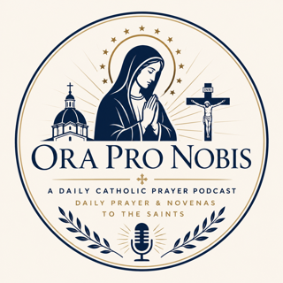

Marian Antiphon
Angelus and Regina Caeli
The Church's daily Marian prayer, prayed as the Angelus outside Easter and Regina Caeli during Easter.

Today's shared focus is mission, received through today's Gospel, Matthew 9:36—10:8 in Ordinary Time.
Angelus and Regina Caeli
The Church's daily Marian prayer, prayed as the Angelus outside Easter and Regina Caeli during Easter.
Liturgy of the Hours
The opening hour of the Divine Office, offered through Spotify as an external prayer source.
Daily offering
A structured Catholic morning prayer with a liturgical opening, offering, consecration, and intercessions.
Lauds
Morning Prayer from the Liturgy of the Hours, linked to Spotify as an external source.
Daily Scripture
The Bible in a Year podcast from Ascension, linked to Spotify as an external source.
USCCB readings
Daily Catholic Mass readings, linked to Spotify as an external source.
Daily saint
A daily saint profile, linked to Spotify as an external source.
Liturgy of the Hours
The midmorning hour from the Liturgy of the Hours, linked to Spotify as an external source.
Liturgy of the Hours
The midday hour from the Liturgy of the Hours, linked to Spotify as an external source.
Liturgy of the Hours
The midafternoon hour from the Liturgy of the Hours, linked to Spotify as an external source.
Angelus and Regina Caeli
The Church's daily Marian prayer, prayed as the Angelus outside Easter and Regina Caeli during Easter.
Daily deliverance prayers
Lay-member daily prayers from Auxilium Christianorum with the liturgical day and weekday prayer.
Liturgical calendar
Ora Pro Nobis novena prayers selected from the liturgical calendar and published as daily audio.
Mysteries and reflections
The daily Rosary with the traditional mysteries and short reflections grounded in the liturgical day.
External Rosary
An external Rosary prayer source available on Spotify.
Ignatian examen
A daily Ignatian-style reflection and guided examen shaped by the day's liturgical context.
Gospel reflection
Daily Gospel exegesis and reflection, linked to Spotify as an external source.
Friday devotion
A fixed Stations of the Cross devotion on Spotify.
Seasonal devotion
A fixed Lenten devotion on Spotify.
Sunday homily
Sunday homilies from Fr. Mike Schmitz, linked to Spotify as an external source.
Sunday sermon
Sunday sermons from Bishop Robert Barron, linked to Spotify as an external source.
Angelus and Regina Caeli
The Church's daily Marian prayer, prayed as the Angelus outside Easter and Regina Caeli during Easter.
Vespers
Evening Prayer from the Liturgy of the Hours, linked to Spotify as an external source.
Night devotion
A fixed night prayer before Compline on Spotify.
Compline
Night Prayer from the Liturgy of the Hours, linked to Spotify as an external source.
Liturgy of the Hours
The Office of Readings, linked to Spotify as an external source.